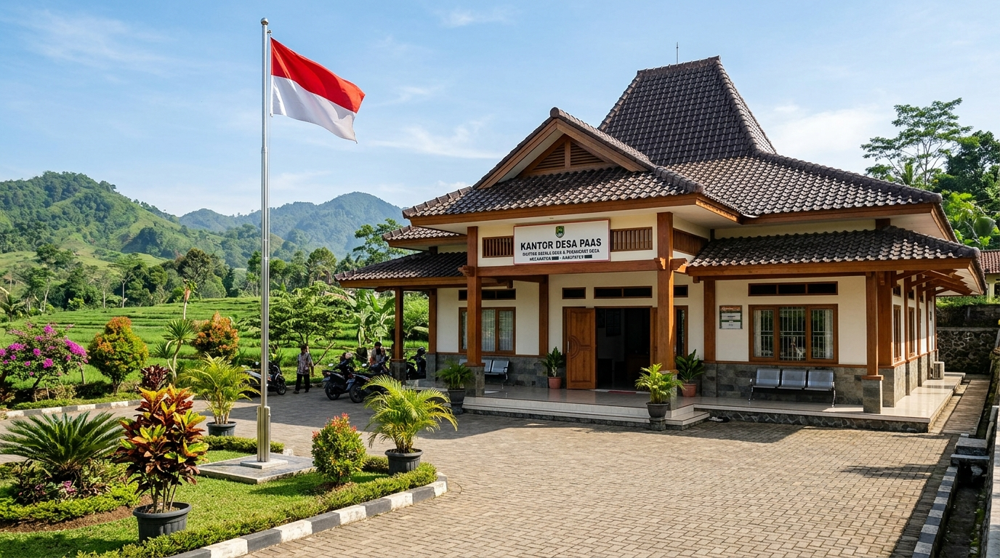

Bantuan Sosial
Penyaluran BLT Dana Desa (BLT-DD) Bagi Keluarga Penerima Manfaat
Pemerintah Desa Paas kembali menyalurkan BLT-DD kepada KPM secara tertib dan transparan di Aula Kantor Desa.
12 Okt 2026
"Menuju Desa Mandiri, Sejahtera, dan Berbudaya"
Pelayanan administrasi terpadu, keterbukaan informasi publik, serta optimalisasi potensi agribisnis dan maritim pesisir Garut Selatan untuk kesejahteraan warga.
L: 3.353 | P: 3.330
Tersebar di 3 Dusun
195 Hektare (BPS)
Dusun 1, 2, dan 3
Komitmen melayani masyarakat dengan integritas, transparansi, dan gotong royong.

Kec. Pameungpeuk, Kab. Garut, Jawa Barat
Masa Bakti Pemerintah Desa Paas • Pameungpeuk
Sampurasun, Warga Desa Paas yang kami banggakan.
Inisiatif website desa ini kami hadirkan sebagai sarana transparansi informasi dan kemudahan pelayanan bagi seluruh masyarakat Desa Paas. Warga kini dapat mengakses informasi syarat surat-menyurat secara mandiri dari smartphone, memantau data kependudukan, serta melihat perkembangan pembangunan fisik dan bansos desa.
Mari kita bersama-sama mewujudkan Desa Paas yang mandiri, sejahtera, agamis, dan berkeadaban.
Cek persyaratan dokumen dan buat surat pengantar resmi tanpa antre lama.
Pembuatan e-KTP baru, perpanjangan, hilang/rusak, dan perubahan data KK.
Untuk keperluan beasiswa sekolah/kuliah, pengobatan, atau program bansos.
Untuk pelaku UMKM Desa Paas dalam permohonan modal bank atau izin usaha.
Menerangkan bukti tempat tinggal resmi warga di wilayah kedusunan Paas.
Surat pengantar kelakuan baik untuk syarat melamar pekerjaan atau dinas.
Dokumen pengantar pencatatan pernikahan resmi ke KUA Pameungpeuk.
Pemerintah Desa Paas kembali menyalurkan BLT-DD kepada KPM secara tertib dan transparan di Aula Kantor Desa.
Pengerjaan rabat beton jalan lingkungan dan drainase permukiman guna mencegah genangan air saat musim penghujan.
Kader PKK dan Posyandu Desa Paas rutin melaksanakan pemantauan tumbuh kembang dan makanan tambahan sehat bagi balita.
Musyawarah perencanaan melibatkan kepala dusun 1, 2, 3 dan tokoh tani guna menyusun usulan prioritas desa.
Kantor Pemerintah Desa Paas siap melayani warga pada hari kerja. Anda juga dapat menyampaikan pengaduan atau permohonan melalui saluran WhatsApp resmi.
Tanggal • Penulis